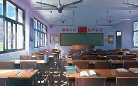

khalid primery&secondry school is a place where students grow into future leaders. We emphasize holistic development through academics, sports, and moral values. With top-tier faculty and facilities, we make sure each student is prepared to succeed in life.
Our vision is to create a nurturing environment where every learner can achieve academic excellence, develop life skills, and become a responsible citizen of the world.
About Us

Founded in 2001, khalid primery & secondry school has been a pillar of quality education in the region. Our curriculum balances theory and practice, with extracurriculars ranging from robotics to literature clubs.
We believe in continuous growth—for both students and teachers. Regular training, seminars, and workshops keep our staff up-to-date with the latest educational trends.
Admissions
We welcome students from diverse backgrounds. Our admission process is simple, inclusive, and based on merit and potential.
Collect application form online or from the admin office.